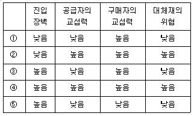
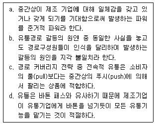
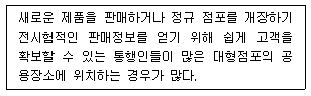
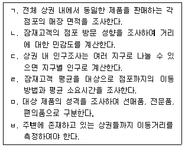
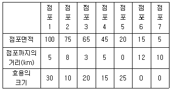
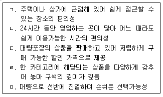
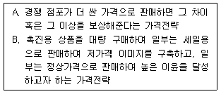
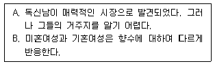
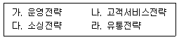

유통관리사-2급 (2013-07-28 기출문제)
1과목: 유통물류일반
1. 물류 아웃소싱에 대한 내용 중 가장 옳지 않은 것은?
- 기업이 직접 고객 서비스 향상이나 물류비 절감 등을 추구하지 못할 경우, 물류기능의 전체 혹은 일부를 위탁, 대행하는 것을 말한다.
- 기업이 물류를 전담하는 자회사를 설립하여, 이자회사를 물류기능에 집중시킴으로써 물류활동의 생산성을 향상시키는 기법이다.
- 제조업체가 할 경우 전문화의 이점을 살려 고객욕구의 변화에 맞는 주력사업에 집중할 수 있으며, 물류투자비로 인한 기업 활동의 제약을 어느 정도 벗어나 조직의 유연성을 확보할 수 있다.
- 초기에는 단순한 운송, 창고, 자재관리에 국한되었으나, 최근에는 EDI 정보교환, 주문접수, 운송업체 선정, 포장, 상품조립 등 직접적인 고객업무로 범위가 확대되고 있다.
- 확대되면 물류공동화와 물류표준화의 가능성이 있으며, 이 밖에 물류시설 및 장비를 이중으로 투자하는데 따르는 투자위험을 피할 수 있다.
(정답률: 69%)

2. 소매점조직 구성원에 대한 설명 중 가장 바르지 않은 것은?
- 구매담당자 - 현재의 재고나 수요를 토대로 구매 주문을 하고 나아가 수요량을 감안한 가격을 결정하기도 한다.
- 기획자 - 계절성, 판촉, 가격변동 등을 고려한 미래상황을 예측한다.
- 카테고리 관리자 - 소비자보다는 벤더와의 유기적 관계를 토대로 상품을 관리, 판매한다.
- 판매원 - 상품 전시와 정리 정돈, 상품 판매, 고객서비스 등 일선에서 중요한 역할을 한다.
- 점포관리자 - 점포의 시설관리 및 판매 운영관리를 담당한다.
(정답률: 74%)
3. 유통업자의 일반적인 경제행위와 가장 거리가 먼 것은?
- 유통업자는 소비자가 필요로 하는 재화를 구매하여 소비자에게 여러 가지 상품과 서비스를 공급한다.
- 유통업자는 소비자가 필요로 하는 재화를 소비자의 구매시점까지 잘 보관해준다.
- 유통업자의 상품구색기능은 소비자보다는 제조업자를 위한 기능이기 때문에 제조기업에게 보다 많은 생산의 기회를 제공한다.
- 제조업자는 자신이 제조한 상품을 직접 판매할 경우 비용부담이 많이 되기 때문에 유통업자가 제조업자를 대신하여 거래장소를 제공해준다.
- 소비자에게 상품의 품질이나 가격 등의 정보를, 공급자에게 소비자의 구매성향 등의 정보를 제공해준다.
(정답률: 55%)
4. 유통경로에 대한 설명으로 가장 옳지 않은 것은?
- 유통경로에서 제공되는 서비스나 아이디어는 소비자나 중간상뿐만 아니라 상품 생산자들에게도 중요하며, 구성원들은 재화를 수송, 운반, 저장하고 정보수집 및 쌍방향으로 정보를 교환한다.
- 제품이나 서비스자체의 흐름을 중심으로 이해하는 것은 물류라 하고, 유통경로에 참여하여 일정한 역할을 하는 기관을 중심으로 고찰하는 것을 일반적인 유통이라 한다.
- 유통경로는 다양한 유형이 존재하고, 사회적∙문화적 특성을 반영하므로 각 나라의 상황에 따라 특수한 형태들이 존재하고 있다.
- 유통경로의 기능은 교환촉진기능, 제품구색의 불일치 완화기능, 거래의 표준화 기능, 소비자와 메이커 간의 연결기능, 고객에 대한 서비스 기능 등이 있다.
- 서비스는 유형적 상품과 달리 서비스 생산자와 공급자가 동일성을 갖는 특징이 있다. 따라서 일반적으로 서비스는 유형적 상품과 달리 유통경로의 길이가 길고 복잡하다.
(정답률: 67%)
5. 조직구조의 형태에 대한 설명으로 가장 옳지 않은 것은?
- 제품별 조직은 제품을 시장특성에 따라 대응함으로써 소비자의 만족을 증대시킬 수 있다.
- 기능별 조직은 환경이 비교적 안정적일 때 조직 관리의 효율성을 높일 수 있으며, 각 기능별로 규모의 경제를 얻을 수 있다.
- 사업별 조직은 제품, 고객, 지역, 프로젝트 등을 기준으로 종업원들의 직무를 집단화하여 조직을 몇 개의 부서로 구분하는 것을 말한다.
- 매트릭스 조직은 담당자가 기능부서에 소속되고 동시에 제품 또는 시장별로 배치되어 다른 조직구조에 비하여 개인의 업무범위가 좁아져 역할갈등이 최소화된다.
- 특정한 계획이나 긴급을 요구하는 문제 처리에 있어 프로젝트팀이나 태스크 포스라 불리는 일시적 조직이 있다.
(정답률: 46%)
6. 포터(M.E. Porter)는 산업구조분석모형(5 forces model)을 제시하였는데, 이를 근거로 해당 산업에서 수익률이 가장 높은 경우는?

- ①
- ②
- ③
- ④
- ⑤
(정답률: 42%)
7. 기업이 비관련 사업의 다각화를 추진하는 이유에 대한 설명으로 가장 옳지 않은 것은?
- 기업이 보유하고 있는 능력과 자원을 새로운 업태 혹은 다른 업종의 사업에 투자함으로써 기존의 자원과 능력을 확장 또는 발전시킬 수 있기 때문이다.
- 동일 기업 내의 여러 사업체가 공동으로 활용하거나 축적된 경영노하우 및 관리시스템 등의 기능을 서로 보완∙활용하는 경우 상승효과가 발생하기 때문이다.
- 개별 사업부문의 경기순환에서 오는 위험을 분산시킬 수 있는 수단이 되며, 기존사업의 성장이 둔화되거나 점차 쇠퇴해 감에 따라 새로운 사업 분야로 진출할 필요성이 대두되기 때문이다.
- 기술 또는 브랜드와 같은 많은 무형의 경영자원을 확보하고 있는 경우, 이런 자원과 거리가 먼 비관련사업으로 다각화를 하는 것이 범위의 경제성을 활용하여 수익률을 증대시킬 수 있기 때문이다.
- 복합기업의 출현을 촉진시켜 시장지배력 증가에 도움이 되며, 기업이 다양한 사업 분야에 진출함으로써 기업 경영상의 유연성 제고와 사업의 포트폴리오를 추구할 수 있기 때문이다.
(정답률: 47%)
8. 고객충성도를 관리하기 위한 방법에 대한 설명으로 올바르지 않은 것은?
- 가치중심세분화는 특정고객이 형성할 수 있는 일반적인 충성도보다 더 높은 충성도를 형성할 수 있게 되어 기업의 투자효율성을 증가시킬 수 있다.
- 욕구중심세분화를 이용한 맞춤형 충성도 프로그램은 적은 비용으로 충성도를 확보할 수 있다.
- 기존 고객들에 대한 자료를 이용하여 이탈예상모델을 구성할 수 있는데, 감소되는 고객의 비율을 예측할 수 있다.
- 가치중심세분화와 욕구중심세분화를 통해 고객을 분류하게 되면 부가가치가 높은 고객들에게 집중 할 수 있게 된다.
- 충성도가 낮은 고객을 대상으로 충성도관리프로그램을 활용하면, 관계를 강화 또는 개선시킬 수 있는 기회를 얻을 수 있다.
(정답률: 18%)
9. 서비스 기대수준과 유통경로의 특성에 대한 설명 중 가장 옳지 않은 것은?
- 고객이 다양한 구색을 원할수록 유통경로의 길이는 짧아진다.
- 고객이 원하는 1회 구매량이 적을 수록 경로의 길이가 길어진다.
- 고객이 주문 후 대기시간을 짧게 하기를 원할수록 개별 경로기관의 규모는 영세화된다.
- 고객이 부수적 서비스를 많이 원할수록 유통경로의 길이는 길어진다.
- 고객이 공간적 편리를 적게 추구할수록 유통기관이 대형화된다.
(정답률: 46%)
10. 전통적 대중매체 마케팅과 비교한 CRM의 장점을 가장 올바르게 설명한 것은?
- 다양한 광고매체를 활용함으로써 고객에 대한 접촉을 늘릴 수 있게 된다.
- 특정 고객의 요구에 초점을 맞춤으로써 표적화가 더 용이하게 된다.
- 다수의 고객들에게 자사의 이미지를 각인시킬 수 있는 기회가 많아진다.
- 불특정 다수의 고객이 창출하는 부가가치를 예측하여 마케팅비용을 할당한다.
- 우리 상품을 이용하지 않은 고객들의 의견도 상품개발에 반영할 수 있게 된다.
(정답률: 47%)
11. 제품 또는 서비스 등을 거래하는 데 수반되는 거래비용에 대한 설명으로 가장 적합하지 않은 것은?
- 코즈(Coase)의 견해에 의하면, 기업이 존재하는 이유는 시장을 통한 거래비용이 내부조직 구축비용에 비해 낮기 때문이다.
- 거래비용은 다른 기업과 거래하기 전에 정보수집 비용, 협상비용, 계약이행비용 등을 비롯하여 최초계약의 불완전으로 인한 비용을 모두 포함한다.
- 거래비용이론은 유통경로시스템 구성원들 간의 기회주의적 행동경향을 기본적인 가정으로 하고 있으며, 거래비용으로 인하여 시장실패의 가능성을 초래할 수 있음을 주장하고 있다.
- 거래비용이론에서는 유통시장에 소수의 거래자만이 참가하거나 자산의 특수성이 존재하는 경우 경로구성원들 간에 거래비용이 커지게 될 수 있기 때문에 수직적 계열화가 발생하게 된다.
- 거래비용이론에 의하면 거래 특유적 자산이 이전될 경우 교환파트너의 기회주의적 행동에 의한 피해 가능성이 높아져, 철저한 감시체계나 타율적 제재 등 권위통제메커니즘을 통한 보호 장치의 필요성을 증가시킴으로써 수직적 통합의 가능성을 높인다.
(정답률: 35%)
12. 자본예산에 관한 설명으로 가장 적절하지 않은 것은?
- 상호배타적인 투자안의 경우, 투자규모 또는 현금 흐름의 형태가 크게 다를 때 순현재가치법과 내부 수익률법이 서로 다른 결론을 제시할 수 있다.
- 투자규모, 투자수명, 현금흐름 등이 서로 배타적인 투자안을 내부수익률법으로 평가하는 경우, 반드시 두 투자안의 NPV 곡선이 상호 교차하는지의 여부를 검토해야 한다.
- 투자자금의 조달에 제약이 있는 경우, 이 제약조건 하에서 최적의 투자조합을 선택하는 의사결정을 하는 경우, 수익성지수법을 사용하면 항상 최적의 투자안 조합을 결정할 수 있다.
- 두 개의 NPV 곡선이 교차하는 지점의 할인율을 피셔(Fisher) 수익률이라고 한다.
- 투자안의 경제성을 분석할 때, 감가상각의 방법에 따라 투자안의 현금흐름이 달라짐으로써 투자안 평가에 영향을 미칠 수 있다.
(정답률: 34%)
13. 직무분석 및 직무명세에 대한 설명으로 가장 옳지 않은 것은?
- 직무분석은 직무에 관련된 정보들과 아울러 직무를 수행할 사람들이 갖추어야 할 요건을 체계적으로 수집하고 정리하는 과정이다.
- 직무분석은 직무에 관련된 정보를 체계적으로 수집하고, 분석 및 정리하는 과정이므로 인적자원관리의 기초 또는 인프라스트럭처라고 한다.
- 직무의 성격, 내용, 이행 방법 등과 직무의 능률적인 수행을 위하여 직무에서 기대되는 결과 등을 간략하게 정리해 놓은 문서를 직무명세서라 한다.
- 조직시민행동 (organizational citizenship behavior)은 직무기술서에 공식적으로 부과되어 있지는 않지만 조직의 효과에 기여하는 활동이다.
- 직무명세서는 직무를 만족스럽게 수행하는 데 필요한 종업원의 행동, 기능, 능력, 지식, 자격증 등을 일정한 형식에 맞게 기술한 문서를 말한다.
(정답률: 32%)
14. 유통경로의 설계 및 관리에 관한 설명 중 옳은 것만으로 구성된 것은?

- a, b
- b, c
- c, d
- a, c
- b, d
(정답률: 53%)
15. 유통기업의 윤리에 대한 설명 중 가장 적합하지 않은 것은?
- 선정적인 광고는 소비자의 성적 본능과 감각을 자극함으로써 주의와 시선을 집중시키는 효과는 있지만 상품의 개념에 상당한 혼란을 가져올 수 있다.
- 비교광고는 확인가능한 객관적 자료를 근거로 해야 하고, 근거가 확실한 경우에도 일부 자료로 전체를 비교하는 표현을 하거나 경쟁 상품을 비방하는 표현을 하는 것은 비윤리적인 행위이다.
- 침투전략은 특별한 원가차이도 없이 같은 제품을 상이한 가격으로 판매하거나 저가로 유인한 뒤 고 가품목을 구매하게 하려는 행위이지만 소비자에 실질적 이득을 주므로 비윤리적 행위라 할 수 없다.
- 경쟁업체와의 수평적 가격담합, 제조업자와 중간상 간의 수직적 가격담합, 그리고 경쟁업체를 시장에서 몰아내기 위해 가격을 내리는 약탈적 가격전략은 비윤리적이다.
- 기업의 가격결정과 가격경쟁은 윤리적 평가가 가장 어려운 문제이며, 가격은 기업의 수익과 직결되는 마케팅믹스요소이므로 비교적 어려운 문제이며 다른 요소에 비해 법적 규제의 강도가 세다.
(정답률: 64%)
16. 제조업체와 유통업체가 상생을 위한 물류측면의 전략적 제휴에 있어서 요구되는 인프라나 장치로 가장 거리가 먼 것은?
- POS(point of sales)
- QR(quick response)
- SKU(stock keeping unit)
- POP(point of purchase)
- EDI(electronic data interchange)
(정답률: 43%)
17. 핸드폰 케이스를 판매하고 있는 A는 최근 공급업체로부터 제안을 받았다. 연간 총수요량 3,000개, 단위당주문 비용 60원, 단위당유지비용 4원이고 다른 조건은 동일하다는 전제하에 경제적 주문량(EOQ)은 얼마인가?
- 250
- 270
- 300
- 330
- 350
(정답률: 59%)
18. 포터(M.E. Porter)의 가치사슬모형에서 본원적 활동(primary activity)에 속하지 않는 것은?
- 기술개발(technology development)
- 운영(operation)
- 입고물류(inbound logistics)
- 출고물류(outbound logistics)
- 마케팅 및 판매(marketing & sales)
(정답률: 43%)
19. 유통 또는 물류기업의 성과측정도구에 대한 올바른 설명으로 가장 거리가 먼 것은?
- SCOR는 비즈니스 프로세스 관점에서 해당 기업의 공급업체로부터 고객에 이르기까지 계획, 공급, 생산, 인도, 회수가 이루어지는 공급망을 통합적으로 분석한다는데 그 기초를 두고 있다.
- SCOR에서는 공급망 성과측정을 위해 공급망의 신뢰성, 유연성, 대응성, 비용, 자산 등 크게 5가지 분야의 성과측정 분야를 제시하고 있다.
- EVA는 기업이 영업활동을 통해 얻어 들인 세후 영업이익으로부터 자본비용을 제외한 금액으로, 투자자본과 비용으로 실제 얼마의 이익을 얻었는가를 나타낸다.
- BSC는 비재무적 성과까지 고려하고 성과를 만들어낸 동인을 찾아내 관리하는 것이 특징이며, 이런 점에서 재무적 성과에 치우친 EVA(경제적 부가가치), ROI(투자수익률) 등의 한계를 극복할 수 있다.
- BSC의 주요 성과지표로는 공급망관리, EVA(경제적 부가가치), 포괄손익계산서, 재무상태표, 성장과학습 등이 있으며 기존의 비재무성과 중심의 측정도구의 한계를 극복하기 위해 개발되었다.
(정답률: 20%)
20. 반품된 제품의 내용으로 가장 옳지 않은 것은?
- 반환되지 않아야 할 제품의 최소화 방안을 찾는 것이 게이트키핑(Gatekeeping)이다.
- 반품되는 제품을 운송하는 프로세스도 역물류라고한다.
- 반품되는 제품의 종류로는 불량품, 리콜된 제품, 리사이클링 제품, 진부화된 제품 등이다.
- 반품되는 제품의 증가 원인으로는 짧아진 제품수명주기, 전자상거래 확대 등에 기인하기도 한다.
- 반품을 통해 고객의 불만족 원인과 개선사항 등과 같은 가치 있는 정보를 수집하기도 한다.
(정답률: 49%)
21. 창고운영 전문업자의 영업 창고를 임차하여 보관 및 하역 업무를 수행할 때의 장점이 아닌 것은?
- 운영의 전문성 제고 가능
- 창고이용과 생산과 판매를 연결시키는 데 시간적 결손이 적음
- 고정비 투자 축소 가능
- 직접 소유보다 창고 활용의 유연성 제고 가능
- 상품의 수요변동에 유연하게 대처 가능
(정답률: 31%)
22. 물류관리에 대한 설명으로 가장 적절하지 않은 것은?
- 물류는 원초지점부터 소비지점까지 원자재, 중간재, 완성재 및 각종 관련 정보를 소비자의 욕구를 충족시키기 위하여 이동시키는 것과 관련된 흐름을 효율적.효과적으로 계획, 수행, 통제하는 과정이다.
- 물류는 구체적으로는 수송, 포장, 보관, 하역 및 통신의 여러 활동을 포함하며, 상거래과정에서 유형적인 물자를 운송하므로 재화의 공간적.시간적인 한계를 극복하게 해준다.
- 비용의 최소화를 위해서는 운송비, 재고비 및 주문처리비 등과 같은 눈에 띄는 비용뿐만 아니라, 배달지연과 재고부족에 따른 매출감소 등과 같이 눈에 띄지 않는 비용도 포함시켜야 한다.
- 물류관리는 목표수준의 고객서비스를 최소의 비용으로 달성하고자 하는 비용접근적 측면도 포함된다.
- 물류는 생산자, 중간상, 소비자 사이에 상거래 계약이 성립된 후 상품대금을 지불하고 상품의 소유권을 이전하는 단계만을 지칭한다.
(정답률: 79%)
23. 상류(상적 유통)과 물류(물적 유통)를 구분하여 설명한 내용으로 가장 옳지 않은 것은?
- 물류는 일반적으로 상거래가 성립된 후 그 물품인도의 이행 기간 중에 생산자로부터 소비자에게 물품을 인도함으로써 인격적.시간적.공간적 효용을 창출하는 경제활동이다.
- 상류는 생산자를 포함하여 중간상과 소비자 사이에서 발생하는 교환과정을 총칭한다.
- 물류는 물류활동이 생산 장소와 소비 장소의 거리를 조정하는 기능을 지니고 있어 그 거리를 좁혀주는 기능을 수행하므로, 생산자와 소비자 모두에게 효용을 가져다준다.
- 상류란 재화가 공급자로부터 조달∙생산되어 수요자에게 전달되거나 소비자로부터 회수되어 폐기될 때 까지 이루어지는 운송∙보관∙하역 등과 이에 부가되어 가치를 창출하는 가공∙조립∙분류∙수리∙포장∙상표부착∙판매∙정보통신 등을 말한다.
- 물류와 상류의 분리로 얻을 수 있는 경제적 효과로 배송차량의 적재율 향상, 유통경로 전체의 물류효율화 실현, 지점과 영업소의 수주 통합으로 효율적 물류관리 가능, 운송경로의 단축과 대형차량의 이용으로 수송비 절감 등을 들 수 있다.
(정답률: 50%)
24. 전형적인 유통경로인 '제조업체 - 도매상 - 소매상 - 소비자'에서 도매상의 역할로 가장 바르지 않은 것은?
- 도매상은 제조업체를 대신하여 광범위한 시장에 산재해 있는 소매상들을 포괄한다.
- 도매상들은 생산자보다 더 고객과 밀착되어 있으므로 고객의 욕구를 파악하여 전달하는 기능을 담당한다.
- 도매상은 소매상 지원기능을 통해 제품구매와 관련한 제품교환, 반환, 설치, 보수 등의 다양한 서비스를 제조업체 대신 소매상에게 제공한다.
- 도매상은 소비자와 가까운 장소에서 다양한 상품 구색에 대한 재고부담을 함으로써 공급선의 비용 감소와 소비자의 구매편의를 돕는다.
- 도매상은 제품사용에 대한 기술적 지원과 제품판매에 대한 조언 등 다양한 서비스를 소매상에게 제공한다.
(정답률: 54%)
25. 인사 고과상의 오류에 대한 설명으로 가장 거리가 먼 것은?
- 현혹효과는 한 분야에 있어서의 어떤 사람에 대한 호의적인 또는 비호의적인 인상을 말하는데, 이는 다른 분야에 있어서의 그 사람에 대한 평가에 영향을 주는 경향을 말한다.
- 상동적 태도는 그 사람이 속한 집단을 지각하고 이를 바탕으로 그 사람을 판단하는 지각과정으로, 한 가지 범주에 따라 판단하는 오류이다.
- 관대화 경향오류는 특정의 피평가자의 인상이나 요소를 감안하여 실제 능력이나 실적보다도 더 높게 평가하고 그 피평가자에게 후한 점수를 주는 평가자의 오류를 의미한다.
- 후광효과의 예로 미국인은 개인주의적이고 물질적이며, 한국인은 매우 부지런하고, 흑인은 운동에 소질이 있으며, 이탈리아인은 정열적이라는 선입견에서 발생하는 오류이다.
- 사람들은 자신의 성공은 능력이나 노력과 같은 내재적 요인이 원인이고 실패에 대해서는 운이나 다른 동료 탓이라고 여기는 경향을 귀인의 이기적 편견이라고 한다.
(정답률: 50%)
2과목: 상권분석
26. 식당이 많이 몰려있는 곳에 술집이나 커피숍이 모여 있다든지, 극장가 주변에 식당들이 많이 밀집해 있는 것은 어느 입지원칙이 적용된 것이라 할 수 있는가?
- 고객차단원칙
- 동반유인원칙
- 보충가능성의 원칙
- 점포밀집원칙
- 경제성의 원칙
(정답률: 53%)
27. 상권을 1차 상권, 2차 상권, 한계상권 등으로 분류하는 것은 어떤 관점에 근거한 것인가?
- 고객 관점
- 판매자 관점
- 행정구역 관점
- 지형적 관점
- 특정 관점과 관계없음.
(정답률: 30%)
28. 도시의 상권경계범위를 계산하기 위해 사용가능한 정보가 A, B, C 세 도시 각각의 소매점 매장면적과 각 도시 사이의 교통수단별 이동시간이라면 어떠한 모형을 활용 할 수 있는가?
- 레일리(Reilly)의 소매인력모형
- 허프(Huff)의 확률모형
- 컨버스(Converse)의 제 1, 2모형
- 애플바움(Applebaum)의 모형
- 루체(Luce)의 모형
(정답률: 10%)
29. 상권분석에 대한 설명 중 가장 올바르지 않은 것은?
- 선매품의 경우에는 위계별 경쟁구조 분석이 필요하며, 다른 위계의 점포들도 경쟁상대로 보고 분석하는 것이 필요하다.
- 편의품의 수요를 올바르게 예측하기 위해서는 업태별 경쟁구조 분석과 업태 내 경쟁구조 분석이 필요하다.
- 전문품의 경우 구매 고객이 많지 않아 여러 점포를 포괄하는 광범위한 상권에서 수요를 예측한 후 수요정보를 공유하여 사용한다.
- 경쟁/보완관계분석은 동반유인의 법칙과 양립성의 법칙을 활용하여 상권을 분석하는 방법으로 모든 유형의 제품에서 사용될 수 있다.
- 잠재경쟁구조분석을 위해서는 업태내 경쟁분석과 업태별 경쟁분석, 위계별 경쟁구조 분석, 경쟁/보완관계 분석이 모두 시행되어야 한다.
(정답률: 21%)
30. 주거, 업무, 여가생활 등의 활동을 동시에 수용하는 건물을 의미하는 복합용도개발이 필요한 이유라고 보기 어려운 것은?
- 도시 내 상업기능만의 급격한 증가현상을 피하고 도시의 균형적 발전을 위하여
- 신시가지와의 균형발전과 신시가지의 행정수요를 경감하기 위해서
- 도심지의 활력을 키우고 다양한 삶의 장소로 바꾸기 위해서
- 도심의 공동화를 막기 위해서
- 수요자의 다양한 요구를 충족시키기 위해
(정답률: 49%)
31. 상권변화 분석에 대한 설명으로 가장 옳지 않은 것은?
- 기존의 상가 및 점포 사이에 새로운 상가 및 점포의 신설, 소비자들의 위치 변화, 고정 인구 및 유동 인구의 변화, 지역 주민들의 직업 형태 등에 의해서도 상권이 변화된다.
- 상권의 변화는 소비패턴, 생활패턴, 계층의 변화, 세대 간의 인식차이, 사회구조 등과 같은 생활환경의 변화에 의해서도 촉진된다.
- 대형할인점, 백화점과 같은 경쟁업체의 진입과 이전에 의해 상권이 주로 변화하며 관공서, 대규모 회사의 이전 등의 요소는 상권변화에 영향을 미치지 않는다.
- 상권변화의 정확한 예측을 위해 상권내 특정점포의 매출액과 변화추이를 유추법이나 실지조사 등과 같은 방법들을 이용하여 조사한다.
- 유동인구가 입지 내로 진입하는 주요 동선 등의 고객 접근성이 변화하면 상권규모도 변화하게 된다.
(정답률: 69%)
32. 각 업태나 업종의 입지에 대한 설명 중 가장 옳지 않은 것은?
- 백화점은 규모면에서 대형화를 추구하기 때문에 상권 내 소비자의 경제력, 소비형태의 예측, 주요산업, 유동인구, 대중교통의 연계성 등을 근거로 적정한 입지를 선정해야 한다.
- 의류패션전문점의 입지는 고객에게 쇼핑의 즐거움을 제공하여 많은 사람을 유인하고 여러 점포에서 비교∙구매할 수 있어야 하므로, 노면독립지역이 중심 상업지역(CBD)이나 중심 상업지역 인근 쇼핑센터보다 더 유리하다.
- 식료품점의 입지는 취급품의 종류와 품질에 대한 소비자의 구매만족도, 잠재 고객의 시간대별 통행량, 통행인들의 속성 및 분포 상황, 경쟁점포 등을 고려해야 하므로, 아파트 또는 주거 밀집지역에 있는 상가나 쇼핑센터가 적당하다.
- 생활용품 중 주방기구나 생활용품, 인테리어 소품 등은 대단위 아파트 및 주택가 밀집지역 등 주거지 인접지역으로 출점하여야 하며 도로변이나 재래시장 근처, 통행량이 많은 곳이나 슈퍼마켓 근처에 입지를 선택하는 것이 유리하다.
- 패션잡화점의 최적 입지는 상호보완적인 상품을 제공하는 다양한 점포들이 모여 있는 곳으로 다양한 상품을 판매하고 유동인구가 많으며, 주로 젊은 세대들이 자주 찾는 지역이 적합하다.
(정답률: 75%)
33. 신규점포의 상권분석에 대한 내용으로 가장 적합하지 않은 것은?
- 체크리스트방법은 단일점포의 입지를 결정하는데 활용하는 방법으로 상권 내 제반 입지의 특성, 상권 고객 특성, 상권 경쟁구조 등 상권 범위에 미치는 요인을 활용하여 평가한다.
- 마일리지고객주소활용법은 마일리지 적립 정보로 고객의 주소를 확인하고 상권범위를 결정하는 방법이다. 또한 고객의 특성 및 니즈도 파악할 수 있어 마케팅전략수립에도 효과적으로 사용된다.
- 유추법은 전체 상권을 단위거리에 따라 소규모지역으로 나누고, 각 지역에서의 1인당 매출액을 구하며, 예상 상권내의 인구에 유사점포의 1인당 매출액을 곱하여 신규점포의 예상매출액을 구한다.
- 중심지 이론에 의하면 중심지는 배후 거주 지역에 대해 다양한 상품과 서비스를 제공하고 교환의 편의를 도모하기 위해 상업 또는 행정 기능이 밀집된 장소를 말한다.
- 레일리(Reilly)의 소매중력의 법칙은 다양한 점포들 간의 밀집이 소매입지의 매력도를 증가시키는경향이 있음을 고려하고 있으며, 이웃 도시들 간의 상권 경계를 결정하는 데 이용된다.
(정답률: 25%)
34. 도매상권을 구성하는 요소 중 중요성이 상대적으로 가장 떨어지는 것은?
- 소매상의 입지, 점포수 및 판매액
- 경쟁도매상의 입지, 분포 및 집적도
- 취급상품 및 상품군
- 도매상의 도시 내 위치
- 로지스틱스(Logistics) 비용
(정답률: 49%)
35. 소매점이 집적하게 되면 경쟁과 양립의 이중성을 가지게 되므로 가능하면 양립을 통해 상호이익을 추구하는 것이 좋다. 양립성을 증대시키기 위한 접근순서가 가장 올바르게 나열된 것은?
- 취급품목 - 적정가격 - 적정가격 대비 품질- 가격범위
- 가격범위 - 취급품목 - 적정가격 - 적정가격 대비품질
- 적정가격 - 취급품목 - 가격범위 - 적정가격 대비품질
- 가격범위 - 적정가격 - 적정가격 대비 품질 - 취급품목
- 취급품목 - 가격범위 - 적정가격 - 적정가격 대비품질
(정답률: 34%)
36. 넬슨(Nelson)의 입지선정 평가방법에 대한 내용으로 가장 적절하게 연결된 것은?
- 중간 저지성 : 경영자가 속한 상권지역 내의 기존 점포나 상권 지역이 고객과 중간에 위치하여 경쟁 점포나 기존의 상권으로 접근하려는 고객을 중간에서 저지할 수 있는 가능성을 평가하는 방법
- 성장 가능성 : 장래 경쟁점이 신규 입점함으로써 고려대상 점포나 유통단지에 미칠 영향 정도, 경 쟁점의 입지, 규모, 형태 등을 감안하여 고려대상점포나 유통단지가 기존점포와의 경쟁에서 우위를 확보할 수 있는 가능성의 정도를 평가하는 방법
- 경쟁 회피성 : 동일한 상권 내의 고객들을 자신의 점포로 유인하는 데 있어서 어떠한 장애요소가 고객들이 접근할 수 있는 가능성을 방해하는지를 살펴보는 것
- 양립성 : 주변 인구 및 일반 고객들의 소득 증가로 인하여 시장 규모, 선택 사업장, 유통상권 등이 어느 정도 성장할 수 있는지를 평가하는 방법
- 접근 가능성 : 경영자가 진입할 상권에 상호 보완관계에 있는 점포가 서로 인접해 있어서 고객의 흡인력을 얼마나 높아지게 할 수 있는가의 가능성을 검토하는 방법
(정답률: 53%)
37. 크리스탈러(Christaller)의 중심지이론에서 중심지기능의 최대도달거리란 무엇을 말하는가?
- 소비자가 중심지까지 도보로 접근 가능한 최대 허용거리
- 전문품 상권과 편의품 상권의 지리적 관점에서의 최대 차이
- 상위 중심지와 하위 중심지 사이의 거리
- 중심지에서 거주지까지의 평균 거리
- 소비자가 상품구매를 위해 중심지까지 기꺼이 이동하려는 최대 거리
(정답률: 60%)
38. 다음 내용은 어떠한 점포의 입지요건에 대한 내용인가?

- 백화점
- 할인점
- 키오스크
- CBD
- 스트립 쇼핑센터
(정답률: 48%)
39. 상권의 정의에 대한 설명으로 가장 올바른 것은?
- 상권의 실제적인 경계선은 점포의 접근성에 의해 결정된다. 점포의 접근성은 쇼핑구역 및 점포의 유형, 경쟁상황 등의 요소에 비해 상권 형성에 더 중요한 영향을 미치게 된다.
- 다수 상권이 몰려있는 경우 각 상권의 형태는 일반적으로 타원의 형태를 지니게 된다. 이는 일직선의 형태를 지닌 도로가 상권에 영향을 주기 때문에 발생하는 현상으로 볼 수 있다.
- 상권의 크기는 상품의 성격에 의해 결정된다. 그 중 편의품은 누구나 사용할 수 있으며 구매의 편의성을 제공하는 상품이기 때문에 상대적으로 광범위한 지역적 범위의 상권을 형성하게 된다.
- 쇼핑몰에 목적점포가 입점해 있는 경우에는 기생점포보다 더 큰 상권범위를 형성하게 된다. 목적점포 없이 기생점포만으로 쇼핑몰을 구성하게 되면 많은 고객을 유인하는 데 한계가 있다.
- 동일한 편의품을 판매하는 다수의 점포들이 모여있을 때 보다 많은 고객을 유인할 수 있어 상대적으로 넓은 상권을 형성할 수 있다. 따라서 편의품 판매 점포는 집단화하는 것이 좋다.
(정답률: 55%)
40. 컨버스(Converse)법칙의 내용으로 가장 잘못된 것은?
- A도시의 인구(8만명), B도시의 인구(2만명), 두 도시간 거리(30km) 등 정보가 주어진다면 두 도시에 대한 소비자 선택의 무차별점을 구할 수 있다.
- ①번 답항의 내용을 토대로 계산을 하면, A도시의 무차별점은 A에서 부터 10km 되는 지점이고 B도시의 무차별점은 B에서 부터 20km가 되는 지점이다.
- 두 도시 A와 B를 연결하는 직선상의 경로를 가정할 때, 이 직선에서 A와 B 각 도시의 주 세력권인 A와 B 도시의 상권의 분기점을 구하는 모델이다.
- 고객의 위치에서 A와 B 두 도시 중 어느 도시로 상품을 구매하러 갈 것인가를 알아볼 수 있는 방법으로 구매대상이 선매품과 전문품인 경우에 가능하다.
- 레일리(Reilly)법칙과 같은 요인을 활용하여 상권을 구분하였기 때문에 세분화된 명확한 상권을 정확하게 구분하기에는 어려운 점이 있다.
(정답률: 44%)
41. 소매포화지수와 함께 시장성장잠재력지수(MEP : Market Expansion Potential)의 특성을 가장 잘 설명한 것은?
- 두 지수가 모두 높은 경우에는 신규출점 후보지로 유력하다고 볼 수 있다.
- 소매포화지수에 시장잠재력이 어느 정도는 반영되어있다고 볼 수 있다.
- MEP는 지역시장 거주자들이 지역시장 이외의 타지역에서 구매하는 지출액을 추정하여 계산한다.
- 지역시장의 매력도를 측정하는 소매포화지수는 한지역시장에서의 수요와 공급의 미래의 수준을 반영하는 척도이다.
- 소매포화지수가 높아질수록 점포가 초과 공급되었다는 의미이므로 신규점포에 대한 시장잠재력이 상대적으로 낮아진다.
(정답률: 48%)
42. 상권분석의 접근방법에 대한 설명으로 잘못된 것은?
- 공간적 독점형 접근법은 주택지역이나 특정 지역 전체를 상대로 하는 점포가 주요 적용대상이 된다.
- 시장침투형 접근법은 특정점포가 흡인하는 세대비율이 지역적으로 변화하며 중복되는 경우가 많은 상황에서 사용할 수 있는 방법이다.
- 분산시장형 분석에서는 고급가구나 고가의 카메라와 같은 상품을 취급하며 특정 소득계층을 대상으로 판매가 이루어지는 점포를 주요 적용대상으로 한다.
- 공간적 독점형 분석은 편의품, 시장침투형은 선매품, 분산시장형은 전문품인 경우에 상권분석 접근법으로 주로 사용될 수 있다.
- 시장침투형 분석은 고객분포와 시장침투율을 중심으로, 분산시장형 방법은 지역단위 표적시장의 고객특성을 중심으로 분석한다.
(정답률: 33%)
43. 허프(Huff)의 확률적 모형을 사용하기 위해 필요한 활동을 모두 포함한 것은?

- ㄱ, ㄴ
- ㄴ, ㄷ
- ㄷ, ㄹ
- ㄹ, ㅁ
- ㅁ, ㅂ
(정답률: 46%)
44. 선희의 점포별 효용과 루체(Luce)의 선택공리의 개념을 이용하여 선희가 점포를 선택한다고 할 때 가장 올바르지 않은 설명은?

- 선희는 5개의 점포만을 대상으로 판단해도 된다.
- 선희의 점포 선택은 점포의 효용에 의해서 결정된다.
- 선희가 점포 1을 선택할 가능성은 30%이다.
- 점포 4의 선택가능성이 점포 3의 선택가능성보다 낮다.
- 점포선택을 위해서는 면적, 거리, 효용 정보가 모두 필요하다.
(정답률: 39%)
45. 편의점의 입지와 다른 특성에 대한 설명 중 올바른 것만 선택한 것은? (문제 오류로 실제 시험에서는 모두 정답처리 되었습니다. 여기서는 1번을 누르면 정답 처리 됩니다.)

- ㄱ, ㄴ
- ㄴ, ㄷ
- ㄴ, ㄹ
- ㄷ, ㅁ
- ㄹ, ㅁ
(정답률: 80%)
3과목: 유통마케팅
46. 촉진믹스의 구성요소 중 인적판매의 단점으로 가장 적절한 것은?
- 촉진의 속도가 느리며 비용이 과다하게 소요된다.
- 전달할 수 있는 정보의 양이 제한적이다.
- 고객별 전달정보의 차별화가 곤란하다.
- 경쟁사의 모방이 용이하여 촉진 효과가 짧다.
- 통제가 곤란하며 촉진의 효과를 측정하기 어렵다.
(정답률: 71%)
47. 재고관리에 대한 설명으로 가장 올바르지 않은 것은?
- EOQ모형에서의 경제적 주문량은 주문비용과 재고 유지비용을 합한 연간 총비용이 최소가 되도록 하는 주문량을 말한다.
- 판매분 매입방식의 경제적 주문량은 재고품의 단위원가가 최소가 되는 1회의 주문량을 계산하여 정한다.
- ROP모형에서는 수요가 불확실한 경우 주문기간 동안의 평균수요량에 안전재고를 더하여 재주문점을 결정한다.
- ROP모형에서는 수요가 확실한 경우 조달기간에 1일 수요량을 곱하여 재주문점을 결정한다.
- ABC관리방식에서는 재고 품목수와 매출액 비율에 의해서 아이템을 그룹핑하여 집중 관리하는 방법을 사용한다.
(정답률: 34%)
48. 서비스의 특성에 대한 내용 중 가장 옳지 않은 것은?
- 무형성 때문에 인간의 감각만으로는 서비스 구매 의사결정을 하기는 쉽지 않다.
- 분리성은 서비스의 경우 생산과 소비가 각각 분리되기 때문에 서비스를 판매하거나 서비스를 수행하는 과정이 다르게 이루어지는 것을 의미한다.
- 비분리성은 서비스를 판매하거나 서비스를 수행하는 이들로부터 분리하기 어렵다는 것을 의미한다.
- 품질 가변성이란 서비스 공급이 노동집약적이기때문에 구매할 때마다 품질이 다르며, 심지어 동일한 공급자에게 구매하는 경우에도 품질이 상이 한 것을 말한다.
- 서비스는 서비스의 생산이 시간요소에 기초하고 저장이 어렵기 때문에 소멸 가능성이 매우 높다.
(정답률: 48%)
49. 유통마케팅 전략 수립을 위한 기본 개념과 용어에 대한 설명으로 가장 올바르지 않은 것은?
- 상권은 소매업태가 상품이나 서비스에 대한 판매의 대상으로 하고 있는 지역을 말하는 것으로 어느 지정 상업집단의 상업권력이 미치는 범위를 말한다.
- 로지스틱스는 원재료의 조달에서 제품판매, 재활용에 이르는 전과정을 물류라는 관점에서 총괄적으로 경영하는 것을 말한다.
- 상품계획이란 고객의 수요를 잘 연구하여 고객에게 팔릴 수 있는 상품의 선정 및 구매를 말한다.
- 판매촉진이란 소비자의 관심 및 흥미, 사고 싶은 욕구를 우리 매장이 취급하고 있는 상품에 쏠리도록 하는 활동을 말한다.
- 총마진수익율(GMROI)은 이익과 회전율을 동시에 감안하여, 평균회전율을 총이익률로 나누어 구한다.
(정답률: 62%)
50. 유통마케팅 조사에 대한 내용 중 가장 옳지 않은 것은?
- 유통과정에서 정보의 흐름은 생산물의 구매자인 소비자와 시장의 동향을 해명하기 위한 정보의 수집을 포함하며, 이는 마케팅조사에 의해 이루어진다.
- 조사의 범위는 수요자에 관한 시장조사와 생산물, 가격, 경로, 프로모션에 의한 마케팅믹스 요소 그리고 환경요소로서의 경제상황, 경쟁, 기술, 정치, 유행 등 유통활동에 대한 조사를 포함한다.
- 수요자 보다 공급자를 대상으로, 상품 및 서비스를 제조하여 판매할 때까지 모든 과정을 조사하는것으로, 그 질적인 측면과 양적인 측면에 관해 조사하고 나아가 그 변화를 연구하는 것이다.
- 주요대상은 매출액 예측, 시장점유율의 측정, 시장동향의 명확화, 조직 이미지의 측정, 브랜드 이미지의 측정, 표적고객 특징의 명확화, 제품과 패키지의 설계, 창고와 점포의 입지, 주문처리, 재고관리 등이다.
- 조사해야 할 문제를 보다 구체화 하고, 조사의 전망을 세우는 것부터 시작하며, 이를 바탕으로 목적의 명확화, 대상의 선정, 방법의 결정, 시기 및 예산의 결정, 그리고 결과의 보고와 평가라는 과정이 이루어진다.
(정답률: 35%)
51. 유통경로에 대한 설명으로 가장 올바르지 않은 것은?
- 유통경로를 설계하기 위해서는 우선 유통경로의 목표를 세우는 것이 필요하며 기업의 전반적인 목표와 마케팅목표가 일치하여야 한다.
- 유통경로의 목표를 설정하고 난 후에는 유통경로 전략을 결정해야 하는데 유통커버리지와 통제수준을 결정하게 된다.
- 유통경로설계에 있어 중요한 문제는 자사의 제품이나 서비스가 경로시스템의 최종단계에까지 도달하도록 보장하는 일이다.
- 유통경로의 푸시전략에서는 주로 인적판매의 방식을 집중적으로 활용하게 되며 중간상인과의 적극적인 협력을 유도하게 된다.
- 유통경로를 통해 생산자로부터 도매상이나 소매상과 같은 중간상을 거쳐 소비자에게로 이동되는 후방 흐름이 촉진된다.
(정답률: 60%)
52. 머천다이징(merchandising)에 대한 설명 중 가장 옳지 않은 것을 고르시오.
- 어떠한 상품을 매입하고 이것을 어떻게 관리하며 어떻게 판매하는 것이 최적의 이익을 얻을 수 있는 것인가에 대한 계획을 세우는 마케팅 활동을 의미한다.
- 고객, 의뢰인, 협력자, 사회가 필요로 하는 가치를 창조, 커뮤니케이션, 배달, 교환하는 일련의 활동, 기관 그리고 과정이다.
- 매입과 판매를 연결하는 시장성 있는 상품을 창출하기 위한 기법으로 특정한 상품이나 서비스를 기업의 마케팅 목적에 따라 가장 잘 실현할 수 있는 장소, 시기, 가격 및 수량으로 제공(마케팅)하는 것에 관한 계획과 관리이다.
- 소매업 상품정책의 중심적인 활동이며 상품의 적절한 매입, 진열을 위한 계획 및 활동이라고 할수 있다.
- 일반적으로 도매업자나 소매업자 등 판매업자의 활동을 의미하는 상품선정과 관리를 말하며 제조업자의 경우에는 제품계획 그 자체라고 할 수 있다.
(정답률: 46%)
53. 디스플레이 유형에 대한 내용 중 가장 옳지 않은 것은?
- 방사형 배열은 디자인 요인들이 중심점으로 빛처럼 모아지는 것이다.
- 단계형 배열은 상품 및 상품의 구성품들을 상향 또는 하향 방향의 연속적인 단계로 배열하는 것이다.
- 피라미드형 배열은 밑은 넓고 위로 갈수록 점점 좁아지는 삼각형과 같은 형태로 상품을 배열하는것이다.
- 지그재그형 배열은 상품을 연단의 꼭대기에 쌓아 올리지 않는 것을 제외하고 피라미드 배열과 유사하다.
- 반복형 배열은 일반적인 특성이 유사한 품목에 이용되며, 무게, 공간, 혹은 각도 등을 정확하게 똑같이 배열한다.
(정답률: 52%)
54. 포지셔닝(Positioning)에 대한 내용 중 가장 옳지 않은 것을 고르시오.
- 기업이 선택한 포지셔닝 전략을 시장에 적용하기 위해서는 경쟁사 대비 경쟁적 강점 파악, 적절한 경쟁우위의 선택, 선택한 포지션의 전달 과정을 거쳐야 한다.
- 시장은 서로 다른 특성을 지닌 소비자들로 구성되어 있기 때문에 소비자들을 일정한 기준에 따라 군집화하여 차별적인 마케팅전략을 구사하고자 하는 것이 포지셔닝 전략이다.
- 제품포지션은 소비자들의 인식 속에 자사의 제품이 경쟁제품에 대비하여 차지하고 있는 상대적 위치를 말한다.
- 기업은 선택한 표적시장의 소비자들 마음속에서 경쟁사에 대비하여 최대한의 경쟁적 우위를 누리기 위하여 포지셔닝 전략을 기획하고 마케팅믹스를 개발한다.
- 기업은 다양한 방법으로 상품을 포지셔닝 시킬 수 있는데 상품의 속성∙상품 편익∙사용 상황∙사용자 집단을 위한 상품으로 포지셔닝하는 방법이 있다.
(정답률: 38%)
55. 선매품을 유통하기 위해 선택할 수 있는 전략으로 부적절한 것은?
- 품질 대비 가격특성을 강조할 경우 선택적 경로를 채택
- 가격지향 선매품은 개방적 유통전략을 채택
- 유행을 주도할 수 있는 경로를 선택
- 차별성 제고를 위한 독점적 경로를 선택
- 유통경로의 수직적 통합을 모색
(정답률: 20%)
56. 유통경로의 성과 측정 중 재무적인 측면과 관련된 설명으로 가장 바르지 않은 것은?
- 당기순이익을 순매출로 나눈 비율은 영업활동의 원가대비 가격의 효과성을 의미한다.
- 상품 회전율이 증가하거나 순매출이익률이 증가하면 총자산이익률도 함께 증가한다.
- 기업이 장단기차입금에 의존하고 있는 정도는 레버리지비율로 나타난다.
- 투자에 따른 배당이 얼마나 이루어질 것인가를 판단하는 지표는 투자수익률이다.
- 자금의 효과적 활용도를 나타내는 총자산회전율은 영업활동의 효율성을 파악할 수 있다.
(정답률: 12%)
57. 고객관계관리(CRM)와 관련된 설명 중 가장 바르지 않은 것은?
- 고객생애주기는 크게 고객획득단계, 고객유지단계, 충성고객단계로 구분된다.
- 고객획득단계에서는 무차별적 고객들에게 유인수단을 제공하여 고객으로 유치한다.
- 기존의 유치 고객이 반복적ㆍ지속적으로 자사제품을 구매하도록 관계를 유지한다.
- 고객관계 강화를 위해 격상판매(up-selling)를 통해 거래액과 횟수를 증가시킨다.
- 고객관계 강화를 위해 교차판매(cross-selling)를 통해 거래제품의 수를 늘리도록 한다.
(정답률: 47%)
58. 불만족 고객의 응대 방법으로 가장 바람직하지 않은 것은?
- 불만 고객들이 거리낌 없이 그들의 불만을 털어놓도록 잘 경청하는 태도를 유지한다.
- 고객들은 대체로 무형의 해결책보다 유형의 해결책을 선호하는 것을 인지하고 응대한다.
- 가이드라인을 지키는 것도 중요하나 지나친 집착보다는 융통성을 발휘하여야 한다.
- 서비스 회복에 있어서 이행상의 공정성을 강조한다.
- 신속한 문제해결을 위해 불만고객에 응대하는 종업원을 자주 교체하지 않는 것이 좋다.
(정답률: 32%)
59. 상품관리의 핵심인 성과를 평가하기 위한 재고총이익률에 관한 설명으로 틀린 것은?
- 바이어의 재고이익률 실적을 평가하는 재무비율
- 재고총이익률=(총이익/총매출)×(총매출/평균재고)
- 재고총이익률=총이익률×재고대비 매출비율
- 재고총이익률=총이익/평균재고
- 수익과 함께 상품자산의 회전율도 평가
(정답률: 17%)
60. 고객 서비스품질(SERVQUAL)과 관련된 설명 중 가장 거리가 먼 것은?
- 고객의 요구에 대하여 신속하게 서비스를 제공하려는 의지는 반응성과 관련이 있다.
- 직원의 지식과 예의 그리고 신뢰와 자신감을 전달할 수 있는 능력은 신뢰성과 관련이 있다.
- 고객에 대한 서비스 제공자의 배려와 관심의 정도는 공감성으로 나타낸다.
- 직원의 외모, 각종 장비 및 도구는 유형성으로 나타낸다.
- 고객서비스의 품질은 소비자에 따라 상대적 중요성이 다르게 나타날 수 있다.
(정답률: 18%)
61. 매장 레이아웃에서 특선품 구역(feature areas)에 대한 설명 중 가장 바른 것은?
- 크게 판촉구역, 엔드매대, 계산구역, 재고보관구역, 벽 등으로 나눌 수 있다.
- 공간이 좁을 경우 벽공간을 이용해 재고품을 보관하거나 상품을 진열하기도 한다.
- 자유진열대의 경우 주로 맨 안쪽에 배치되어 최신 상품을 배치하게 된다.
- 재고보관구역의 경우 상품의 모든 구색이 갖추어져 있다.
- 쇼윈도우를 적절히 사용하면 고객을 매장 안으로 유인할 수 있다.
(정답률: 50%)
62. 포터(M.E. Porter)의 경쟁전략 유형에 대한 설명 중 틀린 것은?
- 전문화 –정상인보다 훨씬 큰 옷만 전문적으로 파는 의류업체
- 원가집중 - 유기농 사과만을 시세보다 항상 저렴하게 파는 과일가게
- 차별화 - 프리미엄 가격으로 다양한 명품을 파는 백화점
- 원가우위 - 상시염가로 파는 대형마트
- 차별화 - 디자이너 브랜드의 다양한 상품을 취급하는 양판점
(정답률: 47%)
63. 격자형 배치에 대한 다음 내용 중 틀린 것은?
- 이 배치의 문제점은 고객들이 상점의 모든 상품에 노출되지 않는다는 것이다.
- 백화점에서 이 배치는 고객이 점포를 둘러보면서 흥미로운 신상품을 둘러보기에 적합하다.
- 규격화된 내부 비품을 사용하므로 비용을 절감할 수 있다.
- 많은 슈퍼마켓에서 이러한 배치를 활용한다.
- 고객은 쇼핑에 많은 시간을 소비하지 않고 원하는 상품의 위치 파악이 용이하다.
(정답률: 50%)
64. 유통의 도매기능 중 상적 유통기능이 아닌 것은?
- 신상품 개발 기능
- 장기 보관의 기능
- 신유통 경로 개발 기능
- 거래처 발굴 및 육성 기능
- 판매 촉진의 기능
(정답률: 52%)
65. 물류시스템의 구체적인 목적에 해당하지 않는 것은?
- 신뢰성 높은 운송기능
- 정보기능과 피드백기능
- 포장과 하역기능
- 재고 서비스기능
- 제품가공과 가격절감기능
(정답률: 36%)
66. 고객접점(MOT : Moment of Truth)에 대한 설명 중 가장 옳지 않은 것을 고르시오.
- 고객이 매장에 들어서서 구매를 결정하기까지 수초 동안의 짧은 순간을 ‘진실의 순간’ 또는 ‘결정적 순간’이라고 한다.
- ‘결정적 순간’이란 고객이 기업조직의 어떠한 측면과 접촉하는 순간이며, 그 서비스의 품질에 관하여 무언가 인상을 얻을 수 있는 순간이다.
- 서비스 상품을 구매하는 동안의 모든 고객접점 순간을 관리하고 고객을 만족시켜 줌으로써 지속적으로 고객을 유지하고자 하는 방법이 고객접점마케팅이다.
- 고객접점에 있는 서비스요원은 책임과 권한을 가지고 고객의 선택이 가장 좋은 선택이었다는 사실을 고객에게 입증시켜야 한다.
- 고객접점에 있는 서비스요원들에게 권한을 부여하고 강화된 교육이 필요하며, 고객과 상호적용에 의하여 서비스가 순발력 있게 제공될 수 있는 서비스 전달시스템을 갖추어야 한다.
(정답률: 35%)
67. 다음에서 설명하는 소매상의 가격전략을 차례대로 나열 한 것은?

- 경쟁가격 - 상시저가
- 경합가격 - 미끼상품가격
- 보상가격 - 로스리더
- 경합가격 - 고저가격
- 보상가격 - 특별할인
(정답률: 27%)
68. 중간상 촉진에 대한 설명으로 가장 올바르지 않은 것은?
- 대형 소매상들의 구매력이 증가함으로써, 소비자 촉진과 광고를 희생하면서까지 중간상 촉진을 요구하는 소매상들의 힘이 증가하고 있다.
- 중간상 촉진관리에 있어 제조업자들은 소매상들이 약속한 촉진을 수행하고 있는지를 확인하기 위해 소매상을 일일이 감시하기 어렵다.
- 소매상이나 도매상으로 하여금 정상적인 것보다 특정 상품을 더 많이 취급하도록 권장하거나 소매상이 특정 상품을 촉진하여 밀어내도록 조장하기 위해 시행된다.
- 중간상 촉진수단 중 공제란 제조업자의 제품을 어떤 방법으로 특성화하도록 합의한 소매상들에게 답례로 제공되는 경비를 말한다.
- 중간상 촉진수단 중 제품보증이란 제품이 특별하게 성능을 발휘할 것을 제조업자가 분명하고도 명료하게 제시함으로써 소매상들의 환불이나 A/S에 대한 부담을 낮추는 것을 말한다.
(정답률: 24%)
69. 다음에서 설명하는 소매업체의 고객세분화 조건을 차례대로 나열한 것은?

- 측정가능성 - 활동가능성
- 규모적정성 - 활동가능성
- 접근가능성 - 차별화가능성
- 접근가능성 - 활동가능성
- 측정가능성 –차별화가능성
(정답률: 62%)
70. CRM의 등장배경으로 가장 적합하지 않은 것은?
- 소비자의 구매방식이 다양화 되었다.
- 소비자의 라이프스타일도 정형화된 생활 방식에서 상당히 복잡하고 다양하게 변화하였다.
- 마케팅 패러다임도 불특정 다수의 고객이 아니라 기존의 수익성 있는 거래 고객들에게 마케팅을 전개하기 시작하였다.
- 기업경영의 패러다임도 수익 중심의 가치경영에서 매출 중심의 규모경영으로 변화하였다.
- 컴퓨터와 정보기술의 발전으로 고객정보를 과학적인 분석 기법을 활용하여 영업활동에 이용할 수 있게 되었다.
(정답률: 75%)
4과목: 유통정보
71. QR 시스템에 대한 설명으로 가장 적절하지 않은 것은?
- 상품수령 비용을 줄이고, 즉각적인 고객서비스를 할 수 있어 서비스의 질을 향상시킬 수 있고 업무의 효율성과 소비자의 만족을 극대화시킬 수 있다.
- 생산에서 판매에 이르기까지 시장정보를 즉각적으로 수집하여 대응하고 회전율이 높은 상품에 적합 한 시스템으로, 구성요소로 EDI, 인터넷 등 통신시스템, POS시스템, EAN 코드 등이 있다.
- 상품개발의 짧은 사이클화를 이룩하여 소비자의 욕구에 신속대응하고, 원자재 조달과 생산 그리고 배송에서의 누적 리드타임을 단축시킴으로써, 미국의 패션의류업계가 수입의류의 급속한 시장잠식을 방어하기 위해 개발하였다.
- 기본적으로 소비되는 상품에도 필요하지만, 최신 유행의 의류업체에서도 필요하다. 유행성이 강한 상품은 새로운 색상과 스타일이 중요하므로 즉각적으로 대응할 수 있어야 하고, 계절적으로도 민감하므로 빠르게 적응할 수 있어야 한다.
- 효과로 상품의 품절 증가와 재고회전율의 감소, 고객정보의 효율적 활용에 의한 소비자 기호에 부응, 완만한 물류서비스 실현 등을 들 수 있다.
(정답률: 33%)
72. 인터넷 마케팅의 효과를 측정하는데 기준이 되는 요소로 가장 옳지 않은 것은?
- 히트의 수
- 페이지 뷰의 수
- 북마크의 수
- 세션의 수
- 방문자의 수
(정답률: 19%)
73. 다음 중 공급체인전략(Supply Chain Strategy)으로 구성 된 것은?

- 가, 나, 라
- 나, 라
- 가, 나, 다
- 가, 다, 라
- 가, 나, 다, 라
(정답률: 70%)
74. 제품 표준화 정도가 낮은 업종의 제조업체가 사업수행을 위하여 여러 협력업체들과 긴밀한 관계를 유지해야 하며, 가격보다는 서비스 품질을 강조해야 하는 경우에 가장 효과적인 e-Marketplace 모델은 무엇인가?
- 직접거래형
- 커뮤니티형
- 연합거래형
- 중개거래형
- 공동구매형
(정답률: 37%)
75. 전자카탈로그에 대한 내용 중 가장 옳지 않은 것은?
- 소비자 측면에서 상품의 효율적인 비교와 검색이 가능하다.
- 인쇄물 형태 보다 저렴한 비용으로 제작할 수 있으며 판매자가 직접 수정 및 편집이 가능하다.
- 제조업자는 상품 홍보 및 마케팅에 관련된 비용을 절감할 수 있다.
- 전자상거래를 위한 전자카탈로그 상품분류코드로서의 UNSPSC는 4단계로 구분되어 있으며, 총 12자리로 구성되어 있다.
- 전자카탈로그 표준에는 전송표준, 포맷표준, 표현표준, 게시표준, 디렉토리 서비스 등이 있다.
(정답률: 52%)
76. 전자상거래 모델의 성공요인으로 가장 거리가 먼 것은?
- 독특한 모델의 제시와 기회를 선점해야 한다.
- 차별화된 콘텐츠를 제공해야 한다.
- 지속적으로 수익을 창출해야 한다.
- 전통적 기업과 달리 제품 중심의 사고에서 출발해야 한다.
- 비즈니스 모델의 지적재산권을 확보해야 한다.
(정답률: 67%)
77. 인터넷 환경을 위한 주요 인증기법의 하나로, 1980년대 말경 개발된 인증 서비스로서 제3의 인증서버를 이용해 자동으로 클라이언트와 서버 간에 서로의 신원을 확인하는 기법을 무엇이라 하는가?
- PKI 인증
- Kerberos 인증
- RSA 인증
- DES 인증
- Hash 인증
(정답률: 10%)
78. 데이터베이스 정규화(normalization)에 대한 내용으로 가장 적합하지 않은 것은?
- 데이터 저장을 위한 메모리의 공간을 최대화한다.
- 테이블 내에 데이터의 중복저장으로 인해 발생할 수 있는 문제를 해결하기 위한 방법이다.
- 새로운 속성을 추가할 때 관계성이 명확한 테이블로 배치시키도록 한다.
- 데이터 무결성을 유지할 수 있도록 하여 정보품질을 높이는 효과가 있다.
- 테이블 내 속성들 간에 존재하는 관계를 밝힌다.
(정답률: 50%)
79. POS시스템과 관련된 설명 중 가장 올바르지 않은 것은?
- POS시스템의 3요소는 스캐너, 포스터미널, 스토어컨트롤러이다.
- POS시스템을 이용하면 거래정보 및 영업정보를 즉시 파악할 수 있다.
- 레지스터에 의해 단품별로 수집된 판매정보는 스토어컨트롤러에 전달되어 유효한 정보로 가공된다.
- 스토어컨트롤러는 영수증을 발행하고 인쇄한다.
- 광학판독기(스캐너)로 바코드를 판독한다.
(정답률: 43%)
80. 바코드에 대한 설명으로 가장 옳지 않은 것은?
- 제조업자 또는 유통업체(중간상)가 부착할 수 있다.
- 실제로 유용하게 사용되기 위해서는 POS시스템이 구축되어야 한다.
- 인스토어마킹은 코드 표준화로 소스마킹에 비해 상대적인 비용 및 시간적인 면에서 효율적이다.
- 소스마킹은 동일상품에 동일코드가 지정된다.
- 유통 외에도 병원, 도서관, 공장 등 대량의 데이터를 신속.정확하게 처리하는 분야에 활용되고 있다.
(정답률: 68%)
81. GS1(Global Standard No.1)에 대한 설명으로 가장 옳지 않은 것은?
- 상품의 식별과 상품정보의 교류를 위한 국제표준 바코드 시스템의 개발 및 보급을 전담하는 세계100여개 국가가 가입한 최고의 민간기구이다.
- 대한민국은 항상 880으로 시작되며, 세계 어느 나라에 수출되더라도 우리나라 상품으로 식별된다. 그러나 국가식별코드가 원산지를 나타내는 것은 아니다.
- GS1코드는 백화점, 슈퍼마켓, 편의점 등 유통업체에서 최종 소비자에게 판매되는 상품에 사용되는 코드로서 상품의 제조단계에서 제조업체가 상품 포장에 직접 인쇄하게 된다.
- 제조업체코드는 대한상공회의소의 유통물류진흥원에서 제품을 제조하거나 판매하는 업체에 부여하며, 업체별로 고유코드가 부여되기 때문에 같은 코드가 중복되어 부여되지 않는다.
- GS1-8 단축형의 경우 인쇄하기에 충분하지 않은 소포장의 작은 상품인 경우에 적용되며, 체크 디지트는 1자리, 제조업체 코드는 6자리로 구성된다.
(정답률: 41%)
82. 지식경영에 대한 설명으로 가장 적절하지 않은 것은?
- 보유된 지식의 활용이나 새로운 지식의 창출을 통해 수익을 올리거나 미래에 수익을 올릴 수 있는 역량을 구축하는 모든 활동들을 말한다.
- 지식사회라는 새로운 패러다임의 출현으로 기업의 관점에서 지식경영은 부가요소가 아닌 생존요소로 간주되고 있다.
- 창조적 지식은 기업이 지속적으로 성장.발전하고 차별적인 경쟁우위를 확보하는 원천이 되고 있다.
- 학습조직이 구체적인 방법론을 제시하지 못하고, 학습조직에 대한 이해부족과 가시적인 결과만을기대했던 점이 오히려 부정적인 원인이 되었다.
- 노나카의 SECI 모델은 암묵지를 제외한 직접적인 형식지의 축적 및 생산에 관련된 내용으로 사회화, 외부화, 종합화, 내면화로 구성되어 있다.
(정답률: 30%)
83. 지식경영의 방법론으로서의 학습 조직에서 추구하는 학습 목표의 속성 중에서 가장 옳지 않은 것은?
- 미래의 기회를 창출할 수 있어야 한다.
- 기업목표와 연계되어야 한다.
- 직무와 연계되어야 한다.
- 업무의 전체 흐름을 파악하는데 기여해야 한다.
- 미래지향적으로 매우 추상적이어야 한다.
(정답률: 65%)
84. 가빈(Garvin, 1993)이 주장한 실행 가능성과 적용 가능성을 고려한 학습조직의 특성과 가장 거리가 먼 것은?
- 학습을 바탕으로 조직의 성취도 개선을 이룩해야한다.
- 창의와 적응을 위한 의도적인 조직이다.
- 외부 환경을 도외시한 조직의 내적 성장능력을 극대화하기 위해 끊임없이 학습을 추구하는 내부지향적인 조직이다.
- 모든 조직 구성원의 학습 활동을 촉진시킴으로써 조직 전체에 대한 근본적인 변화를 지속적으로 촉진시키는 조직이다.
- 학습을 통하여 창출된 지식과 통찰력을 반영할 수 있도록 행동을 변화 시키는데 능숙한 조직이다.
(정답률: 61%)
85. 지식관리시스템의 각 단계별 사이클에 대한 설명으로 가장 옳지 않은 것은?
- 지식 생성: 사람들이 일하는 방식을 새롭게 바꾸고 노하우를 개발하는 과정에서 창조된다.
- 지식 포착: 새로운 지식은 현실적으로 기여할 수 있도록 필요한 상황과 잘 연계되어야 한다.
- 지식 저장: 유용한 지식은 사람들이 접근할 수 있도록 합리적인 형태로 저장되어야 한다.
- 지식 관리: 잘 보관되어야 하고 적절성과 정확성을 입증하기 위한 검토가 수행되어야 한다.
- 지식 유포: 필요로 하는 사람이 언제 어디서든지 유용한 형태로 사용할 수 있도록 제공되어야 한다.
(정답률: 71%)
86. 정보 및 정보화 사회에 대한 설명으로 가장 적합하지 않은 것은?
- 정보는 미래의 불확실성을 감소시키고, 개인이나조직이 의사결정을 하는데 사용되도록 의미 있고 유용한 형태로 처리된 것이다.
- 정보 적시성은 필요 시점에 정보가 제공될 때 가치를 발휘하게 되고, 정보 관련성은 의사결정자와 관련성이 있는 정보를 제공해야 한다는 것이다.
- 협의의 정보는 수집된 자료를 문제해결의 수단으로 해석.정리한 지식을 말하며, 광의의 정보는 수집 가능한 모든 자료들 중에서 목적 달성을 위한 의사결정의 수단으로 사용되는 지식을 말한다.
- 경영자들에게 ‘필요한 정보를 제공하는 것’못지 않게 ‘필요 없는 정보를 제공하지 않는 것’이 중요한 것은 인간의 정보처리능력을 초과하는 경우 정보과부하가 일어나 반응률이 오히려 증가하기 때문이다.
- 정보의 접근성은 저장방법에 의해 영향을 받으며, 정보는 공간적으로 쉽게 접근 가능할수록 가치가 증대되고, 인터넷상의 정보는 VAN에 존재하는 정보보다 접근성이 높다.
(정답률: 39%)
87. m-비지니스의 속성으로 가장 거리가 먼 것은?
- 편재성(Ubiquity)
- 접근성(Reachability)
- 즉시성(Instant Connectivity)
- 개인성(Personalization)
- 배치성(Batch)
(정답률: 43%)
88. e-비즈니스 도입으로 인한 판매자 측면에서의 장점으로 가장 거리가 먼 것을 고르시오.
- 광고비용이 상대적으로 저렴하다.
- 시간과 장소에 대한 제약이 상대적으로 적다.
- 고객의 구매정보를 배치(batch)식으로 모아 구매 형태에 대해 즉각적인 실시간 분석을 가능하게 해 준다.
- 개별 고객에 맞는 적절한 판매 전략을 수립할 수 있다.
- 판매관리비가 상대적으로 적게 든다.
(정답률: 31%)
89. 대칭형 또는 비밀키 암호화(Symmetric or Secret key cryptography)방식의 내용으로 가장 옳지 않은 것은?
- 대칭키 암호방식으로 DES(Data Encryption Standard)는 블록 암호의 일종으로, 미국 NBS(National Bureau of Standards, 현재 NIST)에서 국가 표준으로 정한 암호이다.
- 리베스트(Rivest), 샤미르(Shamir), 아델먼(Adelman) 등이 공동 개발한 RSA법이라는 암호화 알고리즘과 그것을 사용하는 RSA 대칭형 암호방식으로 잘 알려져 있다.
- 대칭키 암호방식은 암호화하는 키로부터 복호화하는 키값을 계산해 낼 수 있거나, 반대로 복호화하는 키로부터 암호화하는 키값을 계산해 낼 수 있다.
- 비밀키 암호화 기법은 동일한 키로 암호화와 복호화를 수행하는 방법으로 보안 유지와 키관리에 어려움이 있으나 알고리즘이 간단해 암호화 속도가 빠르고 용량이 작아 경제적이다.
- 대칭키 암호방식은 암호화 속도가 빠르고, 안전성을 위해 키를 자주 바꿔야 한다. 따라서 네트워크 사용자가 증가함에 따라 관리해야 하는 키의 개수가 증가하며, 상대적으로 키 분배가 어렵다.
(정답률: 32%)
90. 데이터마이닝 기법 중의 하나인 신경망 모형에 대한 다음의 내용 중에서 가장 옳지 않은 것은?
- 예측보다는 명쾌하고 쉽게 이해할 수 있는 결과물을 제공함으로서 정확한 설명력을 더욱 중요하게 고려하는 경우에 이용된다.
- 인간이 경험으로부터 학습해 가는 두뇌의 신경망 활동을 모방한 것이다.
- 자신이 소유한 데이터로부터의 반복적인 학습과정을 거쳐 패턴을 찾아내고 이를 일반화한다.
- 고객의 신용평가, 불량거래의 색출, 우량고객의 선정 등 다양한 분야에 적용된다.
- 다계층 인식인자의 신경망은 입력계층, 출력계층 그리고 은닉계층으로 구성된다.
(정답률: 41%)